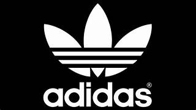

- paginaprincipal
- nike
- adidas
- ROPA
- productos
nike
Nike es la marca deportiva número 1 en el mundo. Es de sobra conocida por todos y pese a partir con desventaja, consiguió superar a toda su competencia. Eso sí, su éxito no ha sido fruto de la casualidad, pues se ha trabajado mucho para conseguir este tremendo éxito.
marcas de ropa nike y adidas
La marca en un principio diseñaba zapatillas de deporte, para posteriormente dar el paso al diseño y fabricación de prendas deportivas. Su logotipo data de 1971 y es conocido con el nombre de Swoosh. El nombre Nike se refiere a la diosa de la victoria en la mitología griega. La marca atravesó por periodos de crisis en los años 80, pero sería el legendario Michael Jordan al publicitar la marca, el que propiciará que Nike dé el paso definitivo hasta convertirse en la gran multinacional de ropa y calzado deportivo. Su eslogan «just do it» ha pasado a la historia del marketing como uno de los más impactantes y exitosos.
Hoy en día, Nike patrocina a multitud de grandes equipos y deportistas de todas las especialidades deportivas. Fútbol, baloncesto, atletismo, rugby y cualquier deporte que uno pueda imaginar cuenta con la imagen de Nike. La marca Nike no sólo es una empresa fabricante de ropa y calzado sino que su logotipo va indisolublemente unido a la palabra deporte.
Adidas, la versión alemana en moda deportiva
La marca de moda deportiva Adidas remonta su origenes a la década de los veinte en que todavía no se llamaba Adidas. será en los años treinta cuando comienza a vestir al equipo alemán de atletismo, además de patrocinar a Jesse Owens. Con Owens logrará un efecto parecido al que logró Nike con Jordan. No será hasta 1949 en que la marca Adidas se constituya como tal. El logotipo de las tres líneas paralelas es universalmente conocido.
La marca Adidas ha sido la primera Zapatillas deportivas de marca que ha utilizado a las grandes celebridades de todos los deportes para promover su marca. Adidas ha participado desde hace décadas en todos los deportes, si bien es en el fútbol donde ha dedicado una especial atención. De hecho desde 1970 está patrocinando la Copa del Mundo de Fútbol. Botas de fútbol, balones, vestimentas de equipos, incluso las vestimentas de los propios árbitros son provistas por la marca alemana.
Adidas junto Con Nike son los dos grandes gigantes mundiales de ropa y calzado deportivo, y la mayoría de los grandes equipos profesionales del mundo lucen los logotipos de estas marcas. Reebok y Umbro, dos grandes marcas de moda deportiva. Reebok perteneciente a Adidas, y Umbro a Nike son otras dos grandes marcas de calzado y ropa deportiva.
Reebok es una marca norteamericana especializada en calzado deportivo. Dispone de unos diseños innovadores y atractivos tanto en zapatos como en ropa y demás accesorios. La marca es originaria de Massachussets pese a depender actualmente del grupo Adidas.
En cuanto a Umbro, esta marca británica vende sus productos en todo el mundo y se caracteriza por sus característicos diseños especialmente dedicados al mundo del fútbol. Curiosamente tanto Reebok como Umbro son marcas muy anteriores en el tiempo a Adidas y Nike, los grupos a los que pertenecen, ya que Reebok se fundó en 1895 y Umbro en 1910.
Joma y Kelme, calzado y ropa deportiva española
Joma y kelme son las dos marcas punteras españoles en el sector de moda deportiva. No sólo están implantadas en España sino en todo el mundo. La empresa manchega Joma esta especializada en el fútbol, tenis y atletismo. Sus ventas en los años 90, especialmente de botas de fútbol, le convirtieron en la marca líder en España. Esta considerada como la tercera marca deportiva por su implantación en España despues de Adidas y Nike.
Kelme es la otra marca de referencia de la moda deportiva española. Fabrica calzado, vestuario y todo tipo de equipamientos deportivos. El fútbol, el piraguismo, el fútbol sala o el atletismo son algunos de los deportes donde la marca tiene gran proyección.
Otras grandes marcas de vestuario deportivo
La japonesa Mizumo, la marca alemana Puma, Kappa, la referencia italiana, o Le Cok Sportif en Francia, son algunas de las marcas de moda y calzado deportivo extendidas por todo el mundo. La importancia de este sector, debido al gran seguimiento que existe a nivel mundial de los diferentes deportes y en especial de algunos como el fútbol, baloncesto, atletismo, ciclismo, tenis o rugby, convierte a este sector industrial en un bastión dentro del mundo de la moda, y coadyuva a que las diferentes vestimentas deportivas sean utilizadas en muchas ocasiones como ropa de calle con el consiguiente incremento de ventas.

adidas
Si te preguntáramos por el concepto Adidas, tu mente viajaría tan rápido que te llevaría a pensar en tu modelo de zapatillas favorito. O en aquel chándal que te llevó a tirarte el pisto entre tus compañeros de clase en plena adolescencia. ¡Qué tiempos! La enseña forma parte de nuestras vidas. Hasta tal punto que seríamos incapaces de saber en qué momento específico esta marca alemana comenzó a formar parte de nuestras vidas. Sin duda, nuestro recuerdo, nuestra trastienda mental nos lleve a pensar en ella con la forma de alguno de sus dos logotipos: las tres bandas o el trefoil –recibe ese nombre porque está inspirado en las coronas de laurel que se utilizaban como premio en las olimpiadas de la Grecia Clásica–. Reconocible aquí y en Timbuktu.